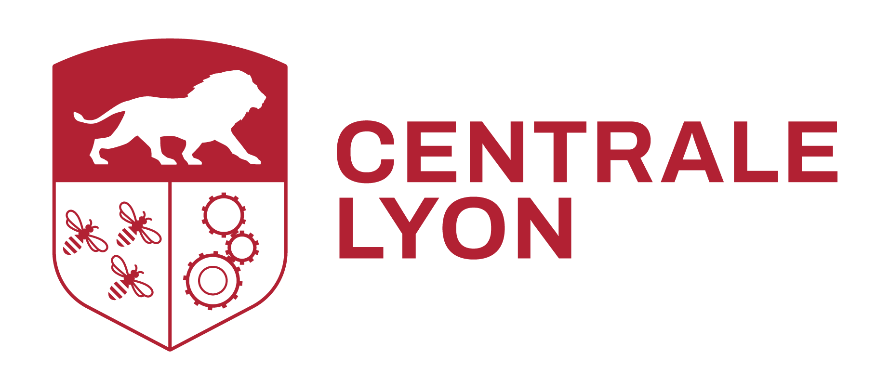
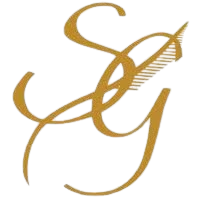

Damien Bonnet-Eymard
PhD student in Scientific Machine Learning @ KU Leuven | MSCA Fellow
I am a PhD researcher with a solid background in both machine learning and physics, developing state-of-the-art Physics-Informed Neural Networks to address complex physics problem. With a strong proficiency in Python and experience as an open-source contributor, I am seeking a challenging position where I can apply my skills in scientific machine learning.
Experience
PhD in SciML @ KU Leuven(2021 - Present)
Marie Skłodowska-Curie Actions (MSCA) fellow, within the GREYDIENT project, developing grey-box models combining data-driven and physics-based approaches. Research focuses on efficient and robust Physics-Informed Neural Networks (PINNs) for solid mechanics, including:
-
Uncertainty Propagation: Propagating microscale uncertainties to the mechanical response of composite materials.
-
Material Parameter Identification: Recovering material properties from full-field measurements.
Data Analysis Internship @ EDF (PRISME R&D) (2020)
Developed tools within the modeling and monitoring R&D department:
- New component for the ThermoSysPro library (Modelica) modeling nuclear reactor core heterogeneity.
- Regularized regression model (pandas, Scikit-learn) predicting power plant operating points.
Data Processing Internship @ Diocles (2019 - 2020)
Worked within an international team on processing data from body scanners:
- Processed 3D data (mesh, point cloud) using MATLAB for indicator extraction.
- Implemented a heat kernel signature algorithm for shape analysis.
- Designed and implemented a measurement acquisition error pipeline.
Education
-

KU Leuven (2021 - )
PhD student under supervision of Prof. David Moens and Prof. Matthias G. R. Faes
-

Ecole Centrale de Lyon (2017 - 2021)
Degree (Master): General Engineer - Computer Science Option
Main courses: Fluid/Continuum Mechanics, Statistics, Signal Processing, Automation, AI and Machine Learning
-

Classe Préparatoire Sainte-Geneviève (2015 - 2017)
Main courses: Maths, Physics, Chemistry
Tech Stack
Machine Learning
PyTorch; JAX; Cuda; DeepXDE*
Data Science
Scikit-learn; Pandas; R; MATLAB
Physics
FEniCS; Modelica; Abaqus
Interests & Side Projects
Sports: Tennis, running, and cycling.
Programming: Open-source contributor. Several side-projects, including: